Public Matches
This feature enables bookers to find players to fill empty spots in racket sport bookings.
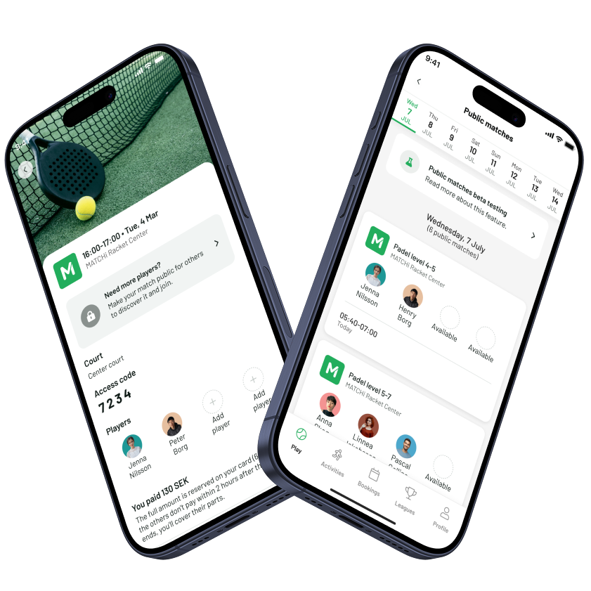
Project overview
Challenge
At MATCHi, a platform dedicated to racket sports where players can book courts at various venues, a recurring pain point was clear: players wanted to play, but finding enough people to fill a court was a real barrier. Whether a teammate cancelled last minute or a player simply didn't have a full group to begin with, there was no way to connect with others looking for the same thing.
Without a solution, players either had to cancel their booking and risk losing money, or avoid booking altogether. This represented both a user problem and a business opportunity as competitors were already operating with a public marketplace feature, and certain markets were pushing for it commercially.
As the sole designer on this project, I worked within a product trio alongside a tech lead and product manager, with influence over both the design direction and product decisions.
My objectives
- Boost user experience with an easy-to-use interface for sharing and joining public matches
- Encourage player interaction through a public space for discovering and joining matches
- Drive venue occupancy by designing a feature that fits seamlessly into MATCHi’s platform and supports the business goals.
Design process
1 Research
Competitive analysis
User research
2 Strategy
Functional description
Product Roadmap
Application map
3 Design
Ideation workshop
Wireframes
High-fidelity wireframes
4 Build and test
Prototype
Usability testings
Final design
01 Research
Competitive analysis
To investigate and understand the feature, I conducted a competitive analysis of three companies in the racket sports booking industry. This analysis aimed to identify key functionalities. By examining how competitors approach similar features, I was able to pinpoint opportunities for differentiation and improvement in our platform, ensuring that MATCHi remains competitive and aligned with user needs.
| Functionality | Company X | Company Y | Company Z |
|---|---|---|---|
| Create public match w/o booking | |||
| Result reporting | |||
| Levels | |||
| Messaging | |||
| Auto-cancellation |
Owning both the booking platform and the marketplace creates a natural advantage where players never need to leave the app. One competitor had already validated this model, confirming the opportunity for MATCHi to build a more integrated and seamless version.
User research
To ensure the feature addressed real market needs, I conducted user research by engaging colleagues who had both a deep understanding of the feature and insights into the commercial landscape. Additionally, I consulted with the commercial team to better understand the market demand, validating that the feature would resonate with our venues and meet their needs. This combined approach ensured that we were building a solution aligned with both user expectations and business goals.
02 Strategy
This intersect of feasibility, desirability, and viability is where the team believe the best product decisions are made.
During the strategy phase, I collaborated closely in a product trio to ensure every decision was well-rounded and aligned with our goals. By planning together from the beginning, we ensured that user needs, technical constraints, and business objectives were all considered.
Functional description
The product manager and I created a functional requirement for the first version of Public Matches to establish a clear and shared understanding of the core functionality. This document served as a blueprint, aligning the team on what needed to be built and why. The tech lead used it as a way to shape the technical build specification. Additionally, it laid a solid foundation for the future design work.
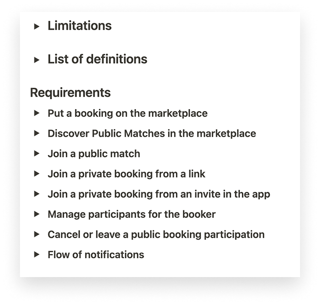
Product roadmap
We used the functional requirements to create a product roadmap. By breaking down the key features and priorities outlined in the requirements, we were able to visualize the journey ahead. This gave us a clear picture of what to tackle first and how each piece fits into the bigger picture. It also helped us set realistic timelines and identify dependencies, ensuring that our team was focused and aligned on our goals.
Application map
I used an application map to explore the hierarchy of the current app. This helped me understand where to integrate Public Matches and identify the key touchpoints for users. By mapping out the existing structure, I could plan how to introduce the new feature without disrupting the overall user flow, ensuring a cohesive experience.
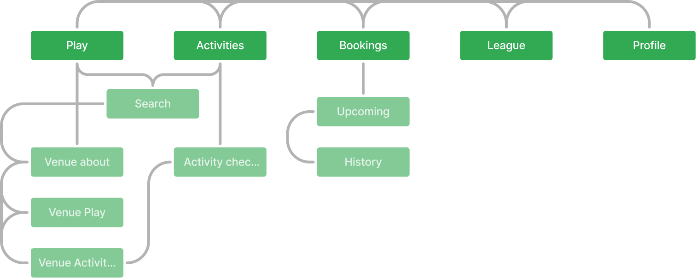
03 Design
Ideation workshop
I facilitated two collaborative ideation sessions, one with my team and another with a group of designers and product managers. These sessions were designed to generate ideas and explore new possibilities. During the session, we focused on generating a broad set of ideas without judgment or evaluation. This approach encouraged open thinking and allowed innovative solutions to emerge. The focus was on quantity rather than quality and the goal was for me to gather ideas which I could use when designing public matches.
Many participants were not used to collaborating in this type of workshop, so I chose a variety of ideation techniques. This allowed me to learn, as a facilitator, what worked best for future sessions.
We started off with reviewing the problem statement and some How-Might-We Questions to frame the ideation in this workshop session. After that we continued with the different ideation techniques:
- Method 6-3-5
- Crazy 8
- The thief
- Flip the problem
Lessons learned from the workshop:
- Some non-designers found it challenging to generate rapid ideas by visualizing them. I'll keep this in mind for future sessions and consider alternative methods for those less familiar with visual ideation.
- It's essential to be very precise and maintain a narrow focus to avoid exploring solutions outside the scope of the feature.
- Many of the ideas generated were great but more suitable for future enhancements rather than the MVP.
- It was fascinating to observe how participants from different professions approached problem-solving, bringing diverse perspectives to the ideation process.
- While a structured workshop was important, I found that being flexible with the agenda allowed for better collaboration and creativity, especially when the group needed more time to explore a promising idea.
- Some team members were quieter than others. I discovered that prompting quieter participants with direct but open-ended questions helped draw out more diverse ideas and perspectives.
While most ideas were scoped out of the MVP, one clear theme emerged: player levels needed to be prominently visible alongside player information. This directly influenced the design, ensuring players could quickly assess whether a match was the right fit for them.
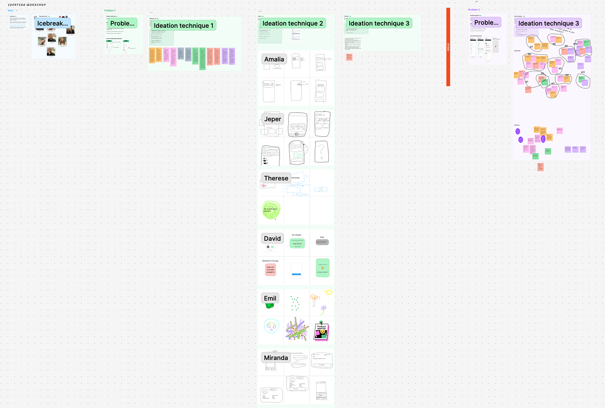
Wireframes
Using the functional requirements and outcomes from the ideation workshop, I created wireframes for the feature. I focused on key screens to get a clear overview of the functionality. Once I had a visual direction for the layout, I started adding more details. This step allowed me to concentrate on visual consistency and hierarchy before moving on to styling.
One key insight from creating wireframes was the need for a more flexible booking details screen, allowing for additional functionality to be added in a scalable way.
One of the most important discussions during this phase was around where to surface Public Matches in the app. One idea I had was to feature it on a new home screen for maximum visibility, but this would have required a significant redesign out of scope for this project. I mapped out the different placement options, evaluating each against impact, development effort and disruption to existing flows. I brought these options to the product trio and together we decided on placing it as a card within the existing Play tab.
The Play tab placement wasn't the most prominent option, but it was the right call for v1. It allowed us to ship without restructuring the navigation, while keeping a more prominent entry point as a clear next step for future iterations.
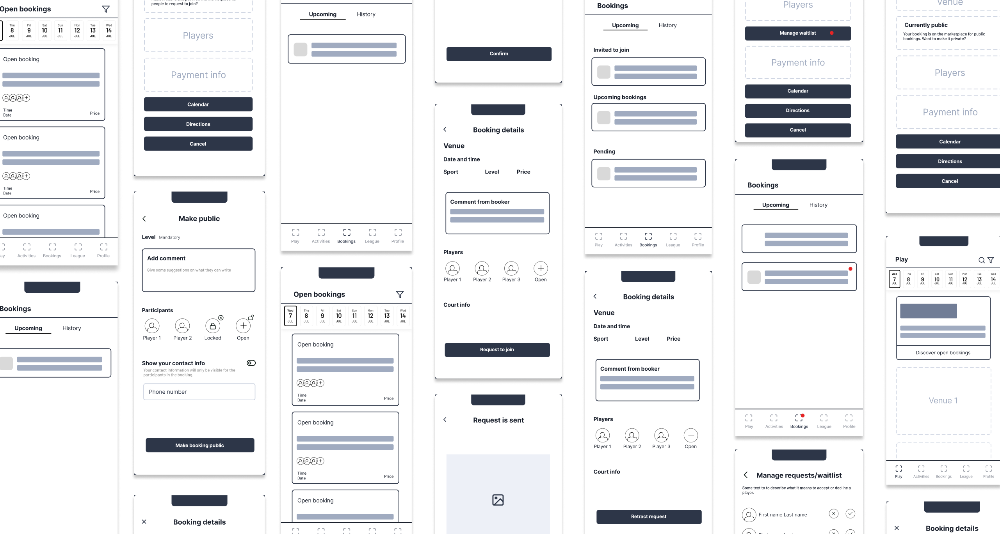
High-fidelity
In the high-fidelity phase, I refined the wireframes into polished, interactive designs, ensuring that the visual details were fully aligned with the brand identity. This step involved applying final styles, colors, and typography while maintaining consistency in the layout and user flow. With a focus on delivering an intuitive and visually engaging experience, I used this phase to validate interactions and fine-tune any micro-interactions, ensuring the design was ready for development.
Testing the flow
I went through the complete requester journey end to end, from finding a public match to sending a request to join. This was the first time the flow had been tested as a connected experience rather than individual screens.
Identifying the gap
After sending a request, there was no indication of what would happen next or what was expected from the user. For someone requesting to join a booking, this uncertainty felt like a missing piece in the experience.
Designing the timeline
I designed a status timeline showing the requester where they were in the process and what steps remained. The active step was highlighted, with upcoming steps visible but muted, giving users clarity on what to expect.
Simplifying for v1
I simplified the component to its core function, balancing design quality with development effort and keeping the implementation straightforward.
Core flows
The core flows cover the two primary payment scenarios a booker may encounter when making a match public. The first flow shows a split payment booking, where the cost is divided between players, requiring additional steps to handle payment distribution when new players join.
The second flow shows a fully paid booking, where the booker has already covered the full cost, making the process of joining simpler and more straightforward for other players.

Supporting flows
The supporting flows cover additional scenarios that extend the core experience.
The first row shows how a booker can invite players directly via their friends list, covering both split payment and fully paid bookings.
The second row covers removal scenarios, how a booker can remove a player who has requested to join, and how to remove a player who was directly invited. These edge cases ensure the booker always has full control over who participates in their match.

Screen details
A snapshot of the full scope of the project, covering all screen states, edge cases, and interaction details that went into the final design.

04 Build and test
Prototype
To align stakeholders and make the development process smoother, I created a prototype of the core user flow. This allowed everyone involved to get a hands-on feel for the interaction and functionality early on. It was also used by the commercial team to communicate to coming feature for some customers excited about this feature.
By visualizing the design in action, we could gather feedback, make adjustments, and ensure the solution was intuitive before moving forward to the development phase. The prototype also served as a valuable reference for developers, clarifying how different elements should behave and interact.
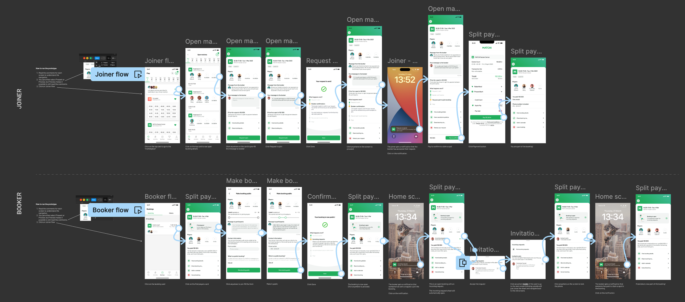
Company test
Following internal test sessions with the team, I organized a company-wide test to ensure the feature was ready for release. Participants were encouraged to freely explore the feature without any specific instructions, clicking around, creating and joining public matches, and interacting with various elements to get a feel for how everything worked. The primary goal was to confirm that the version was stable enough for the initial beta release.
This session brought up some high-priority issues and bugs that the trio felt needed to be addressed before the release. I added the urgent tickets to our GitHub board and also converted the rest of the feedback into tickets to track everything.
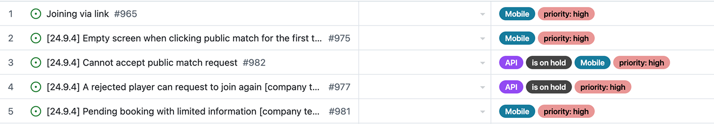
The final design
In the final design, we addressed the need for a more scalable way to present information on the booking details screen. This involved reorganizing key elements to make important details more visible and intuitive for users. By focusing on scalability, the design can easily accommodate future updates and additional functionality, allowing the screen to evolve as new features are introduced.
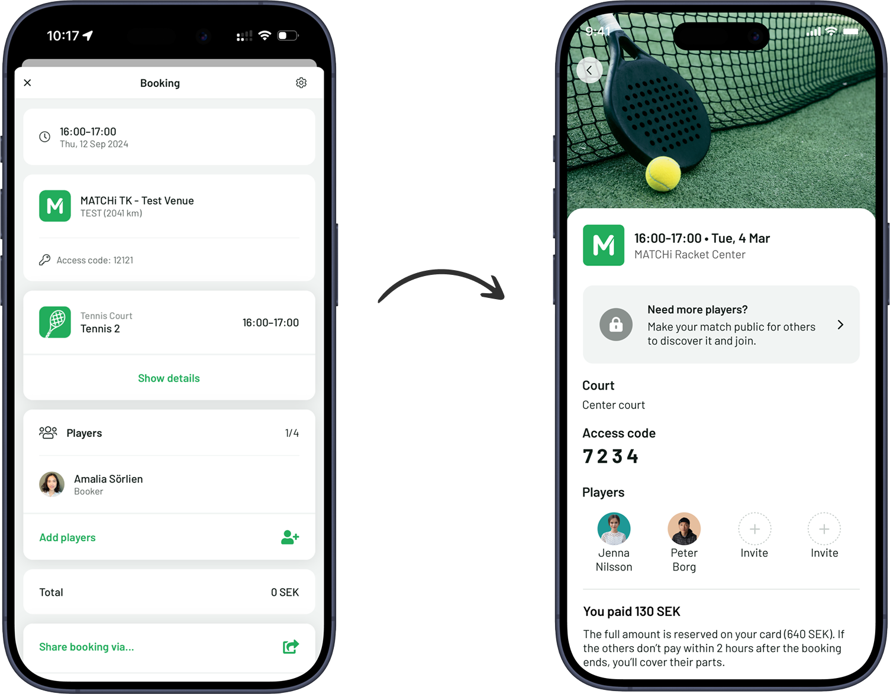
Some of the improvements in the new booking details screen include:
- The ability to highlight information in new, more effective ways
- Easier access to the venue access code
- Greater focus on players, enhancing the social experience
- New sport images for all racket sports, with the option for venues to set custom images for their activities
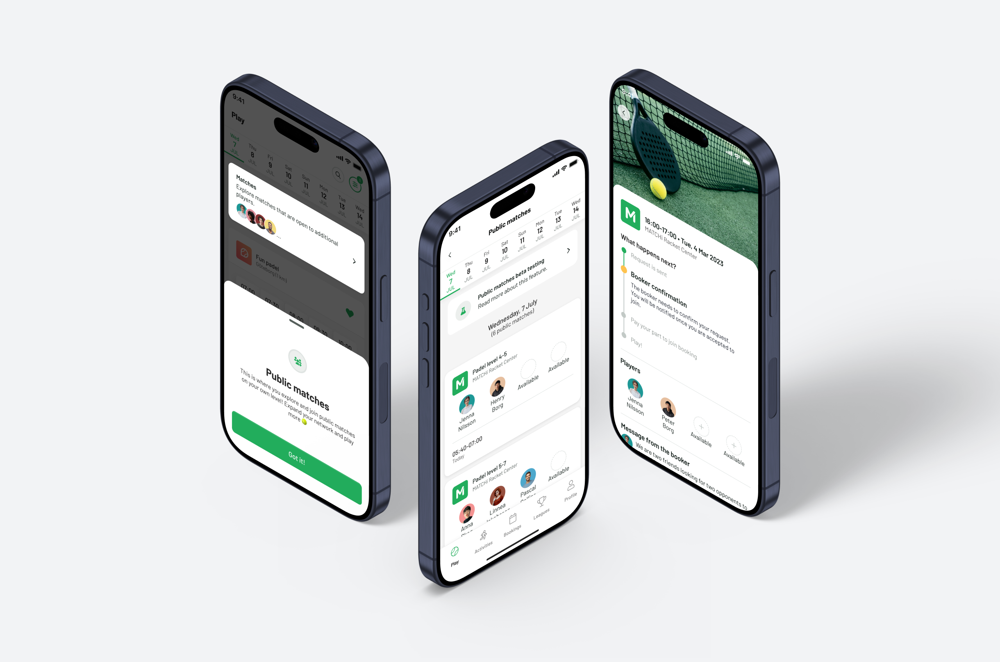
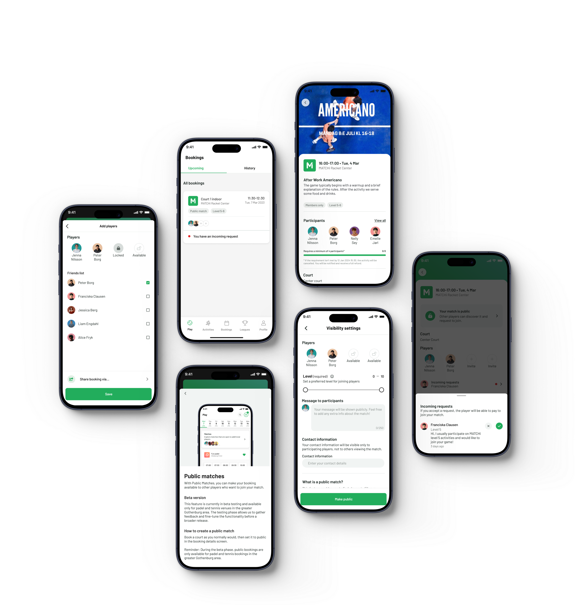
The release
Company awareness
To ensure a smooth rollout of the new feature, I organized a walkthrough session with our customer support and commercial teams. It was important for the customer support team to understand the functionality, as they are the first line of contact for incoming support inquiries.
I also worked closely with the commercial team, providing them with the necessary insights to explain the feature to our existing venues and to effectively pitch it to new customers. This walkthrough session ensured that we were aligned on the feature's value, helping us deliver a cohesive message across the company and to external partners.
Rollout
To gather valuable feedback before a broader release, we decided to launch a beta version of the feature in Gothenburg. This initial rollout allowed us to test the functionality in a real-world environment, identify any potential issues, and gather insights directly from users. By focusing on a smaller market first, we were able to make necessary adjustments based on feedback, ensuring a smoother experience before gradually expanding the rollout to other regions. This approach helped us refine the feature and optimize it for a larger audience.
External communication
To support the beta release, we prepared a targeted newsletter for venues in the Gothenburg area. The newsletter highlighted the key benefits of the new feature and how it would enhance their operations. I was asked by the marketing team to demo the feature for the Help Center, as they thought it would be fun to include someone who had been directly involved in its development. A link to the demo was featured in the newsletter, giving recipients the chance to explore and familiarize themselves with the feature before the official rollout.
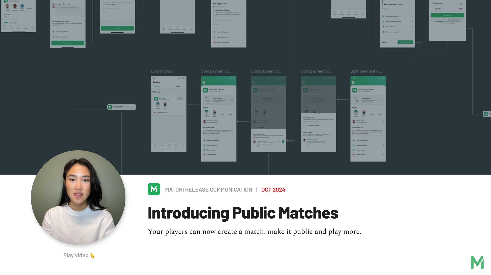
Final thoughts & next steps
Final thoughts
When making design changes to the booking details screen, some developers also wanted to improve it from a technical perspective. While these technical improvements were a good idea, they introduced several bugs in previously stable functionality, causing delays to the public matches timeline. In hindsight, I wish I had been more decisive and pushed for reverting to the original logic when we saw the delays mounting. Taking that step would have kept the project on schedule, with the technical improvements saved for a separate, future project.
If I had more time, I would have liked to dedicate some effort to nice-to-have features. These enhancements could have elevated the overall user experience, making it even more engaging and intuitive for the users.
Next steps
After the beta release in Gothenburg, we will evaluate the progress while addressing medium to low-priority issues. Following this, we plan to roll the feature out in another city before expanding to a broader release across the entire country. From there, we will continue to release it country by country.
Once the feature is available to all players and venues, the team will focus on shaping and building new enhancements to further improve the experience of public matches 🚀
Update: The feature has since continued its rollout and is now live in all markets, with learnings from each release shaping ongoing improvements.